Генератор магнитных импульсов для
неинвазивной
стимуляции сердечной и мышечной деятельности
посредством индуцированного электрического поля
1. Теория
Расчет напряженности электрического поля и плотности тока в среде, возбуждаемого с помощью импульсного магнитного поля.
Рассмотрим задачу, топология которой приведена на рис. 1. Импульсный соленоид помещается на границе раздела двух сред, одна из которых (среда II) является испытуемой. Посредством импульсов магнитного поля в среде II возбуждается электрическое поле и, соответственно, электрический ток, если среда II является токопроводящей. Необходимо найти величину напряженности индуцированного электрического поля и плотности тока в среде II на некотором расстоянии z от края импульсного соленоида.
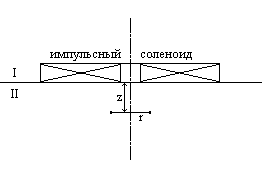
Рис. 1. Импульсный соленоид на границе раздела двух сред.
Закон электромагнитной индукции для замкнутого контура [7]:

В формуле (1) E – электрическая напряженность по контуру L, B – магнитная индукция на поверхности S, натянутой на контур L.
Принимаем следующие приближения:
Тогда:
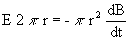
где B - среднее значение аксиальной составляющей магнитной индукции на поверхности S. Отсюда можно выразить электрическую напряженность E:
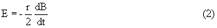
С учетом закона Ома:
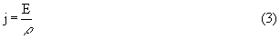
где j – плотность тока, r – удельное сопротивление среды,
имеем для плотности тока j:
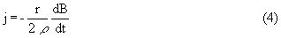
Распределение плотности тока соответствует распределению аксиальной составляющей магнитной индукции соленоида.
Если импульсный соленоид подключен к источнику синусоидального напряжения, то магнитная индукция изменяется по синусоидальному закону B = B0 sin wt, при этом из (2) получаем для электрической напряженности E:
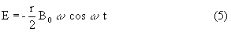
Отсюда можно найти амплитуду электрической напряженности E0:
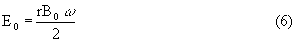
С учетом закона Ома (3) имеем для амплитуды плотности тока j0:
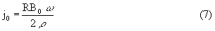
При использовании импульсного соленоида с индуктивностью L и активным сопротивлением R, подключаемого к источнику постоянного напряжения U0, имеем для силы тока I, протекающего через соленоид:
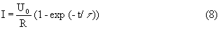
где t – постоянная времени соленоида, t = L/R.
Индукция магнитного поля, возбуждаемого соленоидом, определяется соотношением B=fI, где I – величина тока, протекающего через соленоид, f – коэффициент, определяемый форм-фактором соленоида и координатами точки поля.
Тогда, с учетом (8) можно найти скорость изменения магнитной индукции:
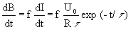
Если коэффициент f известен для некоторой величины тока I0: f = B0/I0, то с учетом того, что t = L/R, получаем:
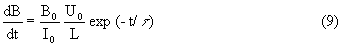
Скорость изменения магнитной индукции и, соответственно, величина напряженности наведенного электрического поля (см. (2)) имеют максимум при t = 0, то есть в момент подключения импульсного соленоида к источнику питания:
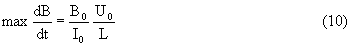
Из (2), (3) и (10) находим амплитуду напряженности электрического поля E0 и амплитуду плотности тока j0:
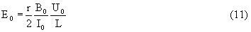
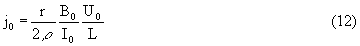
Для значений r = 1 см = 0.01 м, B0 = 1 Тл, I0 = 500 А, U0 = 500 В, L = 0.5 мГн = 0.0005 Гн, r = 1 кОм ∙ см = 10 Ом ∙ м получим из (11) и (12):
E0 ≈ 10 В/м
j0 ≈ 1 А/м2 = 1
мкА/мм2
При возбуждении аналогичного импульсного соленоида синусоидальным напряжением с амплитудным значением U0 = 500 В (сеть переменного тока частотой 50 Гц с действующим напряжением 380 В) и, соответственно, синусоидальным током с амплитудным значением I0 = 500 А получим для значений r = 1 см = 0.01 м, B0 = 1 Тл, w = 314 рад/сек, r = 1 кОм ∙ см = 10 Ом ∙ м из (6) и (7):
E0 ≈ 1.57 В/м
j0 ≈ 0.157 А/м2 = 0.157 мкА/мм2
Это значительно меньше, чем при подключении импульсного соленоида к источнику постоянного напряжения.
Вывод: для получения максимального значения амплитуды напряженности индуцированного электрического поля необходимо использовать импульсы магнитного поля с большой крутизной переднего фронта, что может быть достигнуто при подключении импульсного соленоида к источнику постоянного напряжения. При малых постоянных времени соленоида t = L/R ~ 1 мс в качестве источника постоянного напряжения может рассматриваться конденсаторный накопитель энергии [5] или источник синусоидального напряжения частотой 50 Гц, подключение соленоида к которому производится в момент, когда выходное напряжение приблизительно достигает максимума (амплитуда примерно 500 В для межфазного напряжения 380 В).
2. Техническая реализация
На рис. 2. показан цилиндрический соленоид в разрезе с обозначениями размеров.
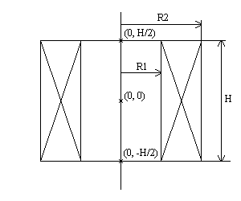
Рис. 2. Соленоид.
Расчет и оптимизация соленоида для генератора магнитных импульсов произведены с помощью программы Coil [1]. Полученные данные (для конкретного технического задания - электрическая напряженность на расстоянии z = 10 мм от края соленоида не менее 15 В/м): R1 = 0.0075 м, R2 = 0.03 м, H = 0.01 м. Индуктивность соленоида L = 0.28 мГн, активное сопротивление R = 0.09 Ом. Среднее значение амплитуды аксиальной составляющей магнитной индукции на расстоянии z = 0.01 м от края соленоида (или 0.015 м от центра - точки (0, 0)) на поверхности, ограниченной контуром радиусом r = 0.015 м, B0 ≈ 1.2 Тл при амплитуде тока I0 ≈ 1000 А. По формуле (11) амплитуда напряженности индуцированного электрического поля на расстоянии 0.01 м от края соленоида по контуру радиусом r = 0.015 м примерно равна 16 В/м при подключении к источнику с выходным напряжением U0 = 500 В.
Импульсный соленоид после намотки заливается в форме эпоксидной смолой с наполнителем. Для удобства использования к нему крепится ручка. Подключение к импульсному генератору осуществляется с помощью кабеля с вилкой. Внешний вид импульсного соленоида показан на рис. 3.
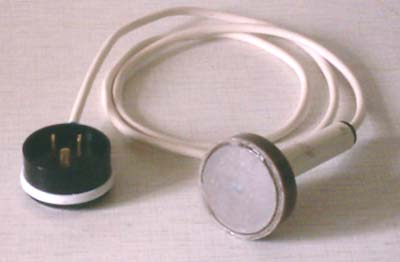
Рис. 3. Импульсный соленоид для генератора магнитных импульсов (максимальный диаметр 80 мм).
Для работы в составе генератора магнитных импульсов могут использоваться различные генераторы мощных импульсов тока [3 - 5]. Испытания проводились в основном с использованием однополярного генератора мощных импульсов тока [4], в блоке управления которого были произведены некоторые изменения. Внешний вид генератора магнитных импульсов показан на рис. 4.
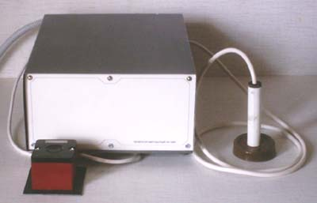
Рис. 4. Внешний вид генератора магнитных импульсов (однополярный генератор мощных импульсов тока и импульсный соленоид).
Магнитные импульсы создавались посредством нажатия кнопки. Максимальная частота следования импульсов достигала 2 Гц и определялась в основном индивидуальными способностями экспериментатора. Допустимое количество импульсов в серии составляло 15, после чего требовалось охлаждение импульсного соленоида (при использовании вентилятора время охлаждения не превышало 15 минут).
Для измерения электрической напряженности разработаны и изготовлены измерительные катушки. Чертеж измерительной катушки в разрезе показан на рис. 5, внешний вид - на рис. 6.
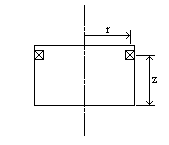
Рис. 5. Измерительная катушка (чертеж).
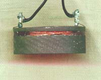
Рис. 6. Измерительная катушка (внешний вид): диаметр 30 мм, высота 12.5 мм.
Измерительная катушка представляет из себя цилиндрический каркас с узкой прорезью. В прорезь наматывается 1 метр провода. Радиус каркаса (с учетом размеров прорези и обмотки) равен радиусу контура (r), на котором необходимо производить измерения электрической напряженности. Расстояние от нижней поверхности каркаса до обмотки z равно расстоянию, на котором от края импульсного соленоида производятся измерения напряженности индуцированного электрического поля. При этом электродвижущая сила (ЭДС) катушки, возникающая за счет изменения магнитного потока, проходящего через ее сечение, численно равна электрической напряженности индуцированного электрического поля. Измерения амплитуды ЭДС можно производить с помощью осциллографа или пикового вольтметра. Схема измерений приведена на рис. 7.
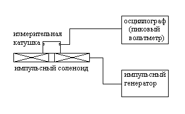
Рис. 7. Схема измерения напряженности электрического поля, индуцированного с помощью импульсного соленоида.
Для контроля магнитной индукции использовался тесламетр с датчиком Холла [2]. Схема измерений приведена на рис. 8. К выходу тесламетра подключался осциллограф для контроля формы магнитного импульса (на рисунке не показан).
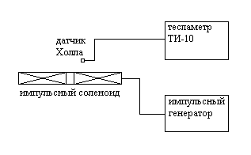
Рис. 8. Схема измерений амплитуды индукции магнитного поля импульсного соленоида.
Измеренные значения амплитуды электрической напряженности и магнитной индукции (аксиальная составляющая) с хорошей точностью соответствуют расчетным данным: E0 ≈ 16 В/м, B0 ≈ 1.2 Тл в точках контура радиусом r = 0.015 м, расположенном на расстоянии z = 0.01 м от края импульсного соленоида. Примерный вид магнитного и электрического импульсов, снятый с экрана осциллографа, показан на рис. 9 и 10, соответственно.
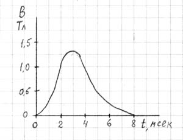
Рис. 9. Магнитная индукция в зависимости от времени (z = 10 мм, r = 0 мм).
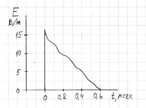
Рис. 10. Напряженность индуцированного электрического поля в зависимости от времени (z = 10 мм, r = 15 мм).
Косвенная проверка возможностей генератора магнитных импульсов по неинвазивной магнитно-импульсной стимуляции мышечной деятельности была проведена по субъективным ощущениям следующим образом. Импульсный соленоид помещался в область шеи испытуемого в районе сонной артерии через диэлектрические немагнитные прокладки различной толщины (0 ... 10 мм). При прохождении импульса тока через соленоид отчетливо ощущалось сокращение отдельных мышц. Аналогичные результаты, хотя и менее отчетливые, были получены при размещении импульсного соленоида без использования прокладок в области сердца, в затылочной части головы и на запястье.
По результатам измерений и испытаний сделан вывод о работоспособности генератора магнитных импульсов и возможности его применения для неинвазивной магнитно-импульсной стимуляции мышечной и, в частности, сердечной деятельности. Возможно дальнейшее усовершенствование генератора, связанное с увеличением напряженности индуцированного электрического поля на заданном расстоянии, увеличении глубины воздействия, локализации области воздействия (в соответствии с формулой (11)). Также не исключена возможность применения вышеприведенной технологии для построения кардиостимуляторов, которые нет необходимости зашивать под кожу пациента (достаточно закрепить импульсный соленоид на груди).
Ссылки:
21.04.2004
09.09.2005
01.02.2006
22.02.2007
Альтернативные источники
энергии
Компьютеры и
Интернет
Магнитные поля
Механотронные системы
Перспективные
разработки
Электроника и
технология